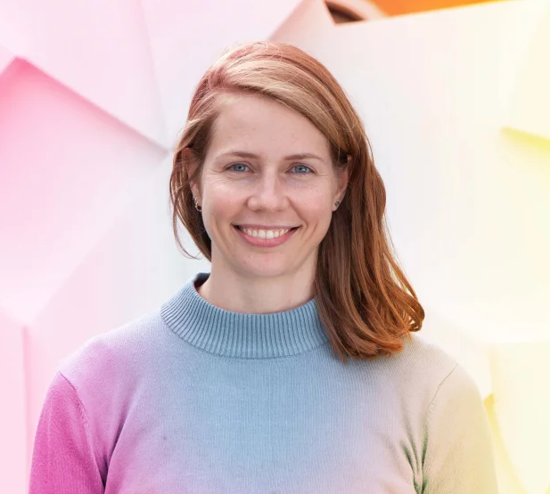

Recently, we have experienced a massive increase in the volume of
scientific articles and research artefacts (e.g., datasets, models, software packages). This
trend is expected to continue and opens up challenges including the development of large-scale
machine-readable representations of scientific knowledge, making scholarly data and knowledge
discoverable and accessible, and designing reliable and comprehensive metrics to assess
scientific impact.
Sci-K provides a forum for researchers and practitioners from different disciplines to
present, educate, and guide research related to scientific knowledge. Three themes
cover the most important challenges in this field: representation,
discoverability, and assessment.
Representation
There is a need for flexible, context-sensitive,
fine-grained, and machine-actionable representations of scholarly knowledge that are, at
the same time, structured, interlinked, and semantically rich: Scientific Knowledge
Graphs (SKGs), also known as Research Knowledge Graphs (RKGs). ...SKGs/RKGs can
power data-driven services for navigating, analysing, and making sense of research
dynamics. Current challenges are related to the design of ontologies or alternative
representation methods able to conceptualise scholarly knowledge, model its
representation, and enable exchange.
Scholarly information should be easily findable,
discoverable, and visible so that it can be mined and organised within SKGs/RKGs.
Discovery tools should be able to crawl the Web and identify scholarly data, whether on
a publisher’s website or elsewhere – institutional repositories
...
, preprint servers or open-access repositories. This is challenging and requires a
deep understanding of both the scholarly communication landscape and the needs of a
variety of stakeholders: researchers (of different fields and sub-fields),
publishers, funders, and the general public. Other challenges are related to the
discovery and extraction of entities and concepts, integration of information from
heterogeneous sources, identification of duplicates, finding connections between
entities, and identifying conceptual inconsistencies. We are particularly interested
in modern systems that integrate AI, NLP, and LLM technologies.
Due to the continuous growth in the volume of research
output, rigorous approaches for the evaluation and assessment of research impact are now
more relevant than ever. There is a need for reliable, comprehensive, and equitable
metrics and indicators of the scientific impact and merit of publications
... , datasets, research
institutions, individual researchers, and other relevant entities.
Sci-K is calling for high-quality submissions around the three main themes of research related to
scientific knowledge: representation, discoverability, and assessment.
Topics of interest include, but are not limited to:
Representation
Data models for the description of scholarly data and their
relationships.
Description and use of provenance information of scientific data.
Integration and interoperability models of different data sources.
NLP and AI approaches that demonstrate related methods and technologies.
Relevant knowledge graphs and ontologies.
Hybrid or LLM-based approaches for representation and knowledge graph
engineering.
Discoverability
Methods for extracting metadata, entities and relationships from
scientific data.
Methods for the (semi-)automatic annotation and enhancement of
scientific data.
Methods and interfaces for the exploration, retrieval, and visualisation
of scholarly data.
NLP and AI approaches that demonstrate related methods and technologies.
LLM-based systems for relevant tasks: e.g., hypothesis generation,
literature review generation and others.
Assessment
Novel methods, indicators, and metrics for quality and impact assessment
of scientific publications, datasets, software, and other relevant
entities based on scholarly data.
Uses of scientific knowledge graphs and citation networks for the
facilitation of research assessment.
Studies regarding the characteristics or the evolution of scientific
impact or merit.
NLP and AI approaches that demonstrate related methods and technologies.
Sponsor
We are grateful to Digital Science for their financial support.
Keynote Speaker
Dr. Jian Wu
Associate Professor at Old Dominion University
Deep Mining Scholarly Big Data in the Large Language Model Era
Abstract:
Since 2023, there has been a surge of public and research interest in large language models (LLMs) and recently vision language models, which significantly shifted the paradigm of mining scholarly big data, bringing both challenges and opportunities for this ever-growing field. This paradigm shift not only significantly improves the performance of traditional metadata-centered pipelines for knowledge extraction, classification, and downstream tasks, which usually served as core components for academic digital libraries, but it also opens doors to the content-centered tasks, mining fine-grained knowledge and data, which provides deeper insights and wider applications of scholarly publications for a broader audience beyond scientific researchers. We explore LLM-based solutions for several content-centered tasks related to knowledge and data from scholarly publications, and prospect how these solutions can shed light on supporting advanced services, such as data preservation, scholarly comparison, review generation, and science dissemination. We share preliminary work in this direction, including open-access datasets and software extraction, complex table data extraction, scientific claim verification, and research reproducibility assessment.
Bio:
Dr. Jian Wu is an associate professor of Computer Science at ODU. Dr. Wu obtained his Ph.D. degree at Pennsylvania State University (Penn State) in 2011 and worked as a postdoctoral fellow with Dr. C. Lee Giles before joining ODU in 2018. Since then, his research has been supported by NSF, IMLS, DARPA, Los Alamos National Laboratory, Virginia Commonwealth, and the Open Philanthropy. Dr. Wu’s research interests include natural language processing, scholarly big data, information retrieval, digital libraries, and the science of science. He has published more than 90 peer-reviewed papers in ACM, IEEE, and AAAI venues, with best papers and nominations, in addition to his earlier publications in Astronomy and Astrophysics. Dr. Wu shared the British Computer Society Award 2021 for the Best Open Source Project with Dr. C. Lee Giles.
Knowledge Representation and Discovery for Cultural Heritage Research Data with CTO and SHMARQL.
Tabea Tietz, Etienne Posthumus, Linnaea Söhn, Jonatan Jalle Steller, Oleksandra Bruns, Joerg Waitelonis, Torsten Schrade and Harald Sack
(Discoverability)
-
Deep Research in the Era of Agentic AI: Requirements and Limitations for Scholarly Research.
Mohamad Yaser Jaradeh and Sören Auer
(Assessment - Short Paper)
-
Coffee Break
2nd Session
-
A Survey on Metadata for Machine Learning Models and Datasets: Standards, Practices, and Harmonization Challenges.
Genet Asefa Gesese, Zongxiong Chen, Oussama Zoubia, Fidan Limani, Kanishka Silva, Muhammad Asif Suryani, Benjamin Zapilko, Leyla Jael Castro, Ekaterina Kutafina, Dhwani Solanki, Heike Fliegl, Sonja Schimmler, Zeyd Boukhers and Harald Sack
(Representation)
-
KONDA: An LLM-based Tool for Semantic Annotation and Knowledge Graph Creation Using Ontologies for Research Data.
Soo-Yon Kim, Martin Görz and Sandra Geisler
(Representation)
-
COPE: Chronic Observation and Progression Events Ontology.
Asara Senaratne, Oshani Seneviratne, Hon Zent Lim and Leelanga Seneviratne
(Representation)
-
Ontologies in Motion: A BFO-Based Approach to Knowledge Graph Construction for Motor Performance Research Data in Sports Science.
Sarah Rebecca Ondraszek, Jörg Waitelonis, Katja Keller, Claudia Niessner, Anna M. Jacyszyn and Harald Sack
(Representation - Short Paper)
-
From Philosophy to NLU: Evolving Definitions of Research Hypotheses.
Jian Wu and Sarah Rajtmajer
(Representation - Short Paper)
-
Lunch
3rd Session
-
Are Scientific Annotations Consistently Represented across Science Knowledge Graphs?
Jenifer Tabita Ciuciu-Kiss and Daniel Garijo
(Representation)
-
MOP: Augmenting and Standardizing Heterogeneous Knowledge Graph Data Sources.
Julia Evans, Mirjan Hoffmann, Sophie Matter and Axel Klinger
(Representation)
-
AI4DiTraRe: Building the BFO-Compliant Chemotion Knowledge Graph.
Ebrahim Norouzi, Nicole Jung, Anna M. Jacyszyn, Joerg Waitelonis and Harald Sack
(Representation)
-
Towards AI-Supported Research: a Vision of the TIB AIssistant.
Sören Auer, Allard Oelen, Mohamad Yaser Jaradeh, Mutahira Khalid, Farhana Keya, Sasi Kiran Gaddipati, Jennifer D'Souza, Lorenz Schlüter, Amirreza Alasti, Gollam Rabby, Azanzi Jiomekong and Oliver Karras
(Assessment - Short Paper)
-
ClimaFactsKG: Towards an Interlinked Knowledge Graph of Scientific Evidence to Fight Climate Misinformation.
Grégoire Burel and Harith Alani
(Discoverability - Short Paper)
-
Coffee Break
4th Session
-
Interlinking Research Data and Services in the Historical Sciences with MemO and the NFDI4Memory Knowledge Graph.
Sarah Rebecca Ondraszek, Tabea Tietz, Jörg Waitelonis and Harald Sack
(Discoverability - Short Paper)
-
Discussion Session (Panel / Fishbowl)
-
Closing and Outlook
Accepted Papers
A Survey on Metadata for Machine Learning Models and Datasets: Standards, Practices, and
Harmonization Challenges Genet Asefa Gesese, Zongxiong Chen, Oussama Zoubia, Fidan Limani,
Kanishka Silva, Muhammad Asif Suryani, Benjamin Zapilko, Leyla Jael Castro, Ekaterina Kutafina, Dhwani
Solanki, Heike Fliegl, Sonja Schimmler, Zeyd Boukhers and Harald Sack read paper
AI4DiTraRe: Building the BFO-Compliant Chemotion Knowledge Graph Ebrahim Norouzi, Nicole Jung,
Anna M. Jacyszyn, Joerg Waitelonis and Harald Sack read paper
Are Scientific Annotations Consistently Represented across Science Knowledge Graphs? Jenifer
Tabita Ciuciu-Kiss and Daniel Garijo read paper
ClimaFactsKG: Towards an Interlinked Knowledge Graph of Scientific Evidence to Fight Climate
Misinformation Grégoire Burel and Harith Alani read paper
COPE: Chronic Observation and Progression Events Ontology Asara Senaratne, Oshani Seneviratne,
Hon Zent Lim and Leelanga Seneviratne read paper
Deep Research in the Era of Agentic AI: Requirements and Limitations for Scholarly Research
Mohamad Yaser Jaradeh and Sören Auer read paper
Interlinking Research Data and Services in the Historical Sciences with MemO and the NFDI4Memory
Knowledge Graph Sarah Rebecca Ondraszek, Tabea Tietz, Jörg Waitelonis and Harald Sack read paper
Knowledge Representation and Discovery for Cultural Heritage Research Data with CTO and SHMARQL
Tabea Tietz, Etienne Posthumus, Linnaea Söhn, Jonatan Jalle Steller, Oleksandra Bruns, Joerg Waitelonis,
Torsten Schrade and Harald Sack read paper
KONDA: An LLM-based Tool for Semantic Annotation and Knowledge Graph Creation Using Ontologies for
Research Data Soo-Yon Kim, Martin Görz and Sandra Geisler read paper
MOP: Augmenting and Standardizing Heterogeneous Knowledge Graph Data Sources Julia Evans, Mirjan
Hoffmann, Sophie Matter and Axel Klinger read
paper
Ontologies in Motion: A BFO-Based Approach to Knowledge Graph Construction for Motor Performance
Research Data in Sports Science Sarah Rebecca Ondraszek, Jörg Waitelonis, Katja Keller, Claudia
Niessner, Anna M. Jacyszyn and Harald Sack read
paper
Towards AI-Supported Research: a Vision of the TIB AIssistant Sören Auer, Allard Oelen, Mohamad
Yaser Jaradeh, Mutahira Khalid, Farhana Keya, Sasi Kiran Gaddipati, Jennifer D'Souza, Lorenz Schlüter,
Amirreza Alasti, Gollam Rabby, Azanzi Jiomekong and Oliver Karras read paper
From Philosophy to NLU: Evolving Definitions of Research Hypotheses Jian Wu and Sarah Rajtmajer read paper
July 11th, 2025July 25th, 2025 (23:59, AoE timezone)
Notification of acceptance
August 8th,
2025August 30th,
2025
2
3
Camera ready due
August 28th,
2025September 16th,
2025 (tentative)
Workshop day
November 2nd, 2025
4
Submission guidelines
Submissions are welcome in the following categories:
Full research papers (up to 12 pages + unlimited pages of appendices and
references)
Short research papers (up to 6 pages + unlimited pages of appendices and
references)
Vision/Position papers (up to 6 pages + unlimited pages of appendices and
references)
The workshop calls for full research papers, describing original work on the listed
topics, and short papers, on early research results, new results on previously
published works, demos, and projects. In accordance with Open Science principles,
research papers may also be in the form of data or software papers (short or long
papers). Data papers present the motivation and methodology behind the creation of
data sets that are of value to the community, e.g., annotated corpora, benchmark
collections, and training sets. Software papers present software functionality, its
value for the community, and its application. To enable reproducibility and
peer-review, authors are requested to share the DOIs of datasets and software
products described in the articles.
The workshop also calls for vision/position papers providing insights towards new or
emerging areas, innovative or risky approaches, or emerging applications that will
require extensions to the state of the art. Vision papers do not necessarily have to
present results but should carefully elaborate on the motivation and ongoing
challenges of the described area.
Submissions for review must be in PDF format. They must be self-contained and written in English.
Submissions that do not follow these guidelines, or do not view or print properly, will be rejected
without review.
Sci-K will adopt a single-anonymous review process, and each paper will be reviewed by at least three
Program Committee members.
The proceedings of the workshops will be published on CEUR either as a standalone volume or in companion
proceedings of ISWC 2025.
Submit your contributions to Sci-K 2025 Easychair page:
We invite you to submit your paper to Sci-K 2025 if it was rejected from the main tracks
(Research, Resource, In-Use),
provided that it is in scope of the workshop.
Here is what you need to do:
Deadline: Submit by 25 July 2025, 23:59 AoE
Formatting: Convert your paper from the LNCS template to CEUR-WS and shorten it to a
maximum of 12 pages.
Reviews: Attach your ISWC main track reviews in appendix. Including these will
significantly speed up our review process, as we'll only need to assign one reviewer. Your reviews
will not be published.
ISWC2025 will be an in-person conference. All Sci-K papers that will be presented at the workshop and at
least one author per accepted paper must register to the conference.
The registration system is now live here, and the early bird rate
is available until September 16th.
You can find all the useful information about the venue, travel, and accommodation on a dedicated page
here.
Please check your VISA requirements to enter Japan. You can find helpful information on the ISWC website
here.
If you are a student, we encourage you to apply for a student grant
here.
Program Committee
PC members in alphabetical order.
Simone Angioni (ISTI CNR)
Amir Aryani (Swinburne University of Technology)
Nana Yaw Asabere (Accra Polytechnic)
Miriam Baglioni (ISTI - CNR)
Ahana Biswas (University of Pittsburgh)
Francisco Bolanos (The Open University)
Grégoire Burel (The Open University)
Davide Buscaldi (LIPN, Université Paris 13, Sorbonne Paris Cité)
Leyla Jael Castro (ZB MED Information Centre for Life Sciences)
Serafeim Chatzopoulos (Athena Research Center)
Rodrigo Costas (CWTS-Leiden University)
Patricia Feeney (CrossRef)
Yuanxi Fu (University of Illinois at Urbana-Champaign)
Tirthankar Ghosal (Charles University, Prague)
Esteban González Guardia (Ontology Engineering Group - Universidad Politecnica de Madrid)
David Jackson (University of Amsterdam)
Mohamad Yaser Jaradeh (L3S Research Center, Leibniz University Hannover)
Alireza Javadian Sabet (University of Pittsburgh)
Anastasia Krithara (NCSR "Demokritos")
Alysson Mazoni (University of Campinas)
Tomasz Miksa (SBA Research)
Shubhanshu Mishra (University of Illinois at Urbana-Champaign)
Lucy Montgomery (Curtin University)
Alba Morales-Tirado (The Open University)
Allard Oelen (L3S Research Center, Leibniz University Hannover)
Sarah Rebecca Ondraszek (FIZ Karlsruhe - Leibniz Institute for Information Infrastructure)
Fabrizio Pecoraro (Institute for Research on Population and Social Policies - National
Research Council)
Etienne Posthumus (FIZ Karlsruhe - Leibniz Institute for Information Infrastructure)
David Pride (Kmi, The Open University)
Sarah Rajtmajer (The Pennsylvania State University)
Diego Reforgiato (Università degli studi di Cagliari)
Stefan Reichmann (TU Graz - Graz University of Technology)
Gunjan Singh (FIZ Karlsruhe - Leibniz Institute for Information Infrastructure)
Ilaria Tiddi (Vrije Universiteit Amsterdam)
Tabea Tietz (FIZ Karlsruhe - Leibniz Institute for Information Infrastructure)
Giacomo Zamprogno (Vrije Universiteit Amsterdam)
Organising Committee
Co-chairs for Sci-K 2025 (alphabetically)
Anna Jacyszyn
FIZ Karlsruhe – Leibniz-Institute for Information Infrastructure,
Eggenstein-Leopoldshafen (DE)
Andrea Mannocci
Italian Research Council (CNR), Pisa (IT)
Francesco Osborne
The Open University, Milton Keynes (UK)
Georg Rehm
DFKI,
Berlin (DE)
Angelo A. Salatino
The Open University, Milton Keynes (UK)
Sonja Schimmler
TU Berlin, Fraunhofer FOKUS, Berlin (DE)

Lise Stork
University of Amsterdam, Amsterdam (NL)
Steering Committee
Alphabetically ordered
Paolo Manghi
Italian Research Council (CNR), Pisa (IT)
Dimitris Sacharidis
Université Libre de Bruxelles (ULB), Brussels (BE)
Held in conjunction with the International Semantic Web Conference (ISWC) 2025,
Nara (Japan)
Aim and Scope
Recently, we have experienced a massive increase in the volume of scientific articles
and research artefacts (e.g., datasets, models, software packages). This trend is
expected to continue and opens up challenges including the development of
large-scale machine-readable representations of scientific knowledge, making
scholarly data and knowledge discoverable and accessible, and designing reliable and
comprehensive metrics to assess scientific impact. Sci-K provides a forum for
researchers and practitioners from different disciplines to present, educate,
and guide research related to scientific knowledge. Three themes cover the
most important challenges in this field:
Representation. There is a need for flexible, context-sensitive,
fine-grained, and machine-actionable representations of scholarly knowledge that
are, at the same time, structured, interlinked, and semantically rich: Scientific
Knowledge Graphs (SKGs), also known as Research Knowledge Graphs (RKGs). SKGs/RKGs
can power data-driven services for navigating, analysing, and making sense of
research dynamics. Current challenges are related to the design of ontologies or
alternative representation methods able to conceptualise scholarly knowledge, model
its representation, and enable exchange.
Discoverability. Scholarly information should be easily findable,
discoverable, and visible so that it can be mined and organised within SKGs/RKGs.
Discovery tools should be able to crawl the Web and identify scholarly data, whether
on a publisher’s website or elsewhere – institutional repositories, preprint servers
or open-access repositories. This is challenging and requires a deep understanding
of both the scholarly communication landscape and the needs of a variety of
stakeholders: researchers (of different fields and sub-fields), publishers, funders,
and the general public. Other challenges are related to the discovery and extraction
of entities and concepts, integration of information from heterogeneous sources,
identification of duplicates, finding connections between entities, and identifying
conceptual inconsistencies. We are particularly interested in modern systems that
integrate AI, NLP, and LLM technologies.
Assessment. Due to the continuous growth in the volume of research output,
rigorous approaches for the evaluation and assessment of research impact are now
more relevant than ever. There is a need for reliable, comprehensive, and equitable
metrics and indicators of the scientific impact and merit of publications, datasets,
research institutions, individual researchers, and other relevant entities.
Topics of Interest
We encourage the submission of papers covering, but not limited to, one or more of
the following topics:
Representation
Data models for the description of scholarly data and their
relationships.
Description and use of provenance information of scientific data.
Integration and interoperability models of different data sources.
NLP and AI approaches that demonstrate related methods and technologies.
Relevant knowledge graphs and ontologies.
Hybrid or LLM-based approaches for representation and knowledge graph
engineering.
Discoverability
Methods for extracting metadata, entities and relationships from
scientific data.
Methods for the (semi-)automatic annotation and enhancement of
scientific data.
Methods and interfaces for the exploration, retrieval, and visualisation
of scholarly data.
NLP and AI approaches that demonstrate related methods and technologies.
LLM-based systems for relevant tasks: e.g., hypothesis generation,
literature review generation and others.
Assessment
Novel methods, indicators, and metrics for quality and impact assessment
of scientific publications, datasets, software, and other relevant
entities based on scholarly data.
Uses of scientific knowledge graphs and citation networks for the
facilitation of research assessment.
Studies regarding the characteristics or the evolution of scientific
impact or merit.
NLP and AI approaches that demonstrate related methods and technologies.
Submission Guidelines
Submissions are welcome in the following categories:
Full research papers (up to 12 pages + unlimited pages of appendices and
references)
Short research papers (up to 6 pages + unlimited pages of appendices and
references)
Vision/Position papers (up to 6 pages + unlimited pages of appendices and
references)
The workshop calls for full research papers, describing original work on the listed
topics, and short papers, on early research results, new results on previously
published works, demos, and projects. In accordance with Open Science principles,
research papers may also be in the form of data or software papers (short or long
papers). Data papers present the motivation and methodology behind the creation of
data sets that are of value to the community, e.g., annotated corpora, benchmark
collections, and training sets. Software papers present software functionality, its
value for the community, and its application. To enable reproducibility and
peer-review, authors are requested to share the DOIs of datasets and software
products described in the articles.
The workshop also calls for vision/position papers providing insights towards new or
emerging areas, innovative or risky approaches, or emerging applications that will
require extensions to the state of the art. Vision papers do not necessarily have to
present results but should carefully elaborate on the motivation and ongoing
challenges of the described area.
Sci-K will adopt a single-anonymous review process and each paper will be reviewed
by at least three Program Committee members.
Submissions must be in PDF format and must adhere to the CEURART single-column
template. Submissions that do not follow these guidelines, or do not view or print
properly, may be rejected without review. You can download an offline version with
the
style
files from http://ceur-ws.org/Vol-XXX/CEURART.zip.
It also contains DOCX template files. Overleaf users may want to use the
CEURART template available in Overleaf. Please adhere also to the CEUR-WS Policy on
AI-Assisting Tools.
The proceedings of the workshops will be published on CEUR (indexed in Scopus, DBLP
and so on.)
Paper submission:July 25th, 2025
(23:59, AoE timezone) Notification of acceptance:August 30th,
2025 Camera-ready due:September 16th, 2025 Workshop day:November 2025 (to be
confirmed)
Organisation
Anna Jacyszyn, FIZ Karlsruhe, DE Andrea Mannocci, CNR-ISTI, IT Francesco Osborne, The Open University, UK Georg Rehm, DFKI, DE Angelo Salatino, The Open University, UK Sonja Schimmler, TU Berlin, Fraunhofer FOKUS, DE Lise Stork, University of Amsterdam, NL